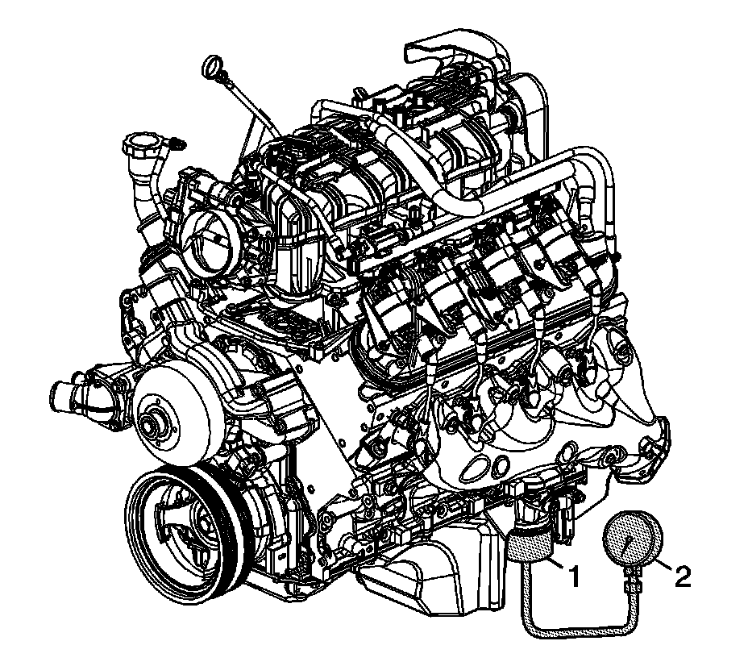

Cylinder Deactivation (Active Fuel Management) Oil Pressure Relief Valve Diagnosis and Testing
Cylinder Deactivation (Active Fuel Management) Oil Pressure Relief Valve Diagnosis and Testing
Tools Required
^ EN-47971 Oil Pressure Gage Adapter
^ J 21867 Pressure Gage
^ J-21867-16 Oil Pressure Adapter

Important:
^ Active Fuel Management Oil Pressure Relief Valve Diagnosis and Testing is applicable for RPO LY2/LC9/LY5/LMG/LY6/L76/L92.
^ This test is performed to verify the operation of the active fuel management oil pressure relief valve located in the oil pan. Refer to Cylinder Deactivation (Active Fuel Management) System Description and Lubrication Description.
Remove the oil filter and install the EN-47971 (1).
1. Install the J 21867 (2), or equivalent to the EN-47971 (1).
2. Remove the oil pressure sensor and install the J-21867-16.

3. Install the J 21867 (1), or equivalent to the J-21867-16 (2).
4. Run the engine and measure the engine oil pressure while observing both gages.
Operate the throttle, as required, to increase and decrease the engine oil pressure.
^ With the engine running and the lower pressure gage (2) measuring below 379 kPa (55 psi), both gages should display the same pressure reading. If the readings are not the same and the lower gage (2) has a higher reading, the active fuel management oil pressure relief valve is stuck in the open position or the valve lifter oil manifold filter is plugged.
^ With the engine running and the lower pressure gage (2) measuring above 379 kPa (55 psi), the upper gage (1) should display no greater than 379-517 kPa (55-75 psi). If the reading on the upper gage (1) is greater than 517 kPa (75 psi), the active fuel management oil pressure relief valve is stuck in the closed position.
5. Repair, as required.